Gülşah Taşan için Özel: Elimizdeki Ürünlerle 5 Temel Cilt Masası
Artık karmaşık protokoller yok! Danışanın koltuğa oturduğunda cildini seç; masandaki hangi ürünleri sırayla alacağını, buharı kaç dakika tutacağını ve hangi cihaz başlığını açacağını tek bir ekranda, net ve alt alta gör.
Yağlı, Parlayan, Tıkalı Gözenekli & Siyah Noktalı Cilt
Kabin Amacı: Sebumu sabunlaştırmak, gözenek tıkacını yumuşatıp acısızca boşaltmak ve parlamayı matlaştırmak.
Seçenek B: Aşırı yağ ve parlama varsa Firstdating Kiwifruit Oil-Control Mask veya Bioaqua Aktif Karbon Maske uygula. 15-20 dk sonra soyarak/yıkayarak çıkar.
Bir estetisyenin en büyük gücü, neyi sıkacağını değil neyi ASLA SIKMAYACAĞINI bilmesidir. Seul kliniklerinin teşhis protokolleriyle lezyonları anında ayırt et:
Danışanların göz çevresindeki minik beyaz kabartıları komedon sanıp tırnakla veya presle ezmek dokuyu yırtar. Doğru ayrım:
| Lezyon Adı | Nasıl Görünür? | Doku & Dokunma Hissi | Kabin Müdahalesi (Doğru Yol) | KESİN YASAK |
|---|---|---|---|---|
|
Milia (Keratin Kisti) Epidermal Kist |
1-2 mm, parlak inci beyazı veya açık sarı, pürüzsüz sert kubbe. Gözenek deliği yoktur. | Deri gerildiğinde minik bir boncuk/kum tanesi gibi parmak altında sertçe kayar. | 30G Lanset ile tepe noktasına 45° açıyla mikroskopik çentik atılır. Ardından iki parmakla hafif yan itişle inci fırlar. | Çentiksiz Sıkmak Doku yırtılır, kanar, kist çıkmaz ve yerinde mor leke kalır! |
|
Kapalı Komedon (Whitehead) Sebum Tıkacı |
1-3 mm, donuk ten rengi veya hafif soluk beyaz. Mikroskopik gözenek ağzı vardır. | Deri gerildiğinde kubbeleşir, dokununca hafif yumuşak direnç verir. | Enzim + Dezan Enzim peeling ve buharla yumuşatılır, Scrubber spatula veya vakumla kıl gibi boşalır. | Kuru Kuruna Sıkmak Buharsız sıkılırsa folikül duvarı patlar, derin akneye dönüşür. |
|
Seboreik Hiperplazi Büyümüş Yağ Bezi |
2-4 mm, sarımsı, ortasında krater gibi çöküntü (umbilikasyon) olan kubbe. Alın ve burunda sıktır. | Komedon gibi sert değildir; bastırınca hafifçe yayılır, kenarında minik lobüller görünür. | Salisilik Tampon Sıkılmaz! İçi boşalacak sebum tıkacı değildir, büyümüş bez dokusudur. RF koter veya dermatolog gerekir. | SIKMAK YASAKTIR Tırnakla sıkmaya çalışmak dokuyu ezer ve kalıcı çukur (atrofik skar) bırakır. |
|
Siringom (Syringoma) Ter Bezi Tümörü |
1-3 mm, ten rengi veya sarımsı-pembe, düz tepeli, alt göz kapağında simetrik kümelenmiş kabartılar. | Dermise sıkıca demirlenmiştir! Deri gerilse bile hareket etmez, son derece sert ve inatçıdır. | Dermatoloğa Sevk Kabinde tedavi edilemez. CO2 Lazer pinhole veya mikro-koterizasyon gerekir. | KABİNDE DOKUNULMAZ İğne batırmak veya sıkmak göz kapağında kalıcı yara ve pigment bozukluğu yapar! |
Yanaklardaki kızarıklığı "canlı kan akışı" veya "sivilce" sanıp buhar/vakum basmak kılcalları geri dönüşsüz patlatır:
| Durum | Belirtisi | Neden Olur? | Kabin Protokolü |
|---|---|---|---|
| Telanjiyektazi (Kılcal Damar Çatlaması) | Burun kenarı ve yanakta kırmızı/mor örümcek ağı gibi net görünen ince damar çizgileri. | Aşırı sıcak su, sert fırçalama, genetik damar duvarı zayıflığı. | BUHAR KESİN YASAK! Vakum yasak. Mormed Cryo Soğuk Çekiç (2°C) + Eclado Centella Maske + Genosys SRP. |
| Papülopüstüler Rozasea (Gül Hastalığı) | Yanak ve burunda kelebek şeklinde yaygın kızarıklık + üzerinde aknemsi iltihapsız kırmızı kabartılar. | Kronik vasküler enflamasyon ve Demodex paraziti aşırı çoğalması. | Asit ve soyucu yasak. Mormed Mavi LED (415 nm) + Soğuk Oksijen Sisi (Snow Booster) + Genosys SRP. |
| Cilt Bariyer İflası (Yanan Cilt) | Ciltte gözle lezyon yoktur ama dokunulan her kremde "iğneler batıyor, alev alev yanıyor" der. | Yanlış kozmetik, aşırı asit kullanımı veya sert peeling sonrası TEWL patlaması. | Yıkama suyunu ılık/soğuk tut. Hiçbir asit sürme. Eclado Centella Mask + Bol Genosys SRP sürerek seansı bitir. |
Lekenin derinliğini anlamadan yapılan derin peeling lekeyi derinin altına iter:
| Leke Türü | Görünümü | Derinlik & Davranış | Kabin Yaklaşımı |
|---|---|---|---|
| Melazma (Kloazma) | Alın, elmacık kemikleri ve bıyık bölgesinde simetrik, harita gibi dağınık kahverengi yamalar. | Dermal ve mikst derinliktedir. Isı gördükçe kararır! Radyo frekans ve sıcak buhar lekeyi azdırır. | Sıfır ısı! Eclado Melaser + Pozitif İyontoforez + Mormed Yeşil LED (525 nm) + Dr-Meinaier Kojik Asit Jelly Mask. |
| PIH (Post-İnflamatuar Hiperpigmentasyon) | Sivilce sıkıldıktan veya yara iyileştikten sonra kalan kırmızı/kahverengi nokta izler. | Epidermaldir (yüzeyeldir). İltihap sonrası melanositlerin bıraktığı kalıntıdır. | Genosys Bio-Meso PDRN (hücre yenileme) + Laktik Asit (AHA) Chamber A vakumu + Kiraz Whitening Maske. |
| Solar Lentigo (Güneş Lekesi) | Sınırları net, yuvarlak veya oval, tekil koyu kahverengi madeni para gibi lekeler. | Epidermal keratinositlerde melanin yığılmasıdır. Yılların güneş birikimidir. | Düzenli C Vitamini Chamber C + Eclado Melaser + Yaz kış Genosys BBC SPF koruması. |
1. Cilt Dezenfeksiyonu: Bölgeyi klorheksidin veya alkolsüz antiseptik solüsyonla sil.
2. Doğru Lanset: Sarı uçlu 30G veya gri uçlu 27G tek kullanımlık steril medikal lanset iğnesi kullan.
3. Açılan Açı (45° Kuralı): İğneyi asla cilde dik (90°) batırma! Milia kapsülünün tam tepesine 45 derece yatay açıyla yalnızca 0.5 milimetrelik mikro-çentik at.
4. Boşaltma: İğneyi kenara koy. İki parmağına steril gazlı bez sar. Kistin tam altına değil, 5 mm yanlarına iki taraftan hafif aşağı ve yukarı yönlü itme uygula. Sert keratin incisi fırlayarak dışarı çıkar.
5. Kapatma: Bölgeye pamukla hafifçe bastır, hemen ardından Raha Med Hi-Frequency (Yüksek Frekans) ile 10 saniye dokunarak mikro deliği dezenfekte et ve kapat.
🚨 Kabin Acil Durum & Danışan Şikayetleri Yönetimi
Kabin işlemlerinde danışanın anlık fizyolojik reaksiyonlarında saniyeler içinde doğru adımı atarak güveni pekiştirmek için 6 temel klinik senaryo ve anlık müdahale adımları:
1. Ürünü bol soğuk distile su / fizyolojik serumla anında temizle.
2. Asla sıcak havlu sürme! Mormed Cryo Soğuk Çekiç (2°C) başlığını steril gazlı bez üzerinden 3-5 dk dairesel tamponla.
3. Üzerine sadece Eclado A.C. Centella Mask kapat, bitişte Genosys SRP sür.
1. Spikül uygulandıysa: Silmeye çalışma, mikroiğnecikler deriye girmiştir. Masajı durdur, Eclado Soothing Jel ile oklüzyon yap.
2. Karboksi ise: 15-20 dk dolunca gazlı bezle al, soğuk çekiçle ferahlat.
1. Sıcak buhar ve RF gibi ısı yayan cihazları derhal kapat.
2. Buzdolabından soğuk Genosys Snow Booster sislemesi yap.
3. 525nm Yeşil veya 590nm Sarı LED ışık tüneline al (15 dk), ardından Cryo Soğuk Çekiçle yatıştır.
1. Maskeyi ve solüsyonu anında kaldır, soğuk serum fizyolojikle durula.
2. Asla asit, granüllü peeling veya kazıma yapma.
3. Yalnızca saf centella/papatya özlü jel sür, 415nm Mavi LED altında 10 dk yatıştır.
1. Vakumu derhal kapat veya Seviye 2-3'e düşür.
2. K Vitamini ve cica içerikli Genosys SRP Soothing Repair kremi kalın tabaka sür.
3. Mormed Cryo Soğuk Çekiçle kılcal damar büzülmesi (vazokonstriksiyon) sağla.
1. Göz kapaklarına derhal soğuk distile suyla ıslatılmış pamuk ped kapat.
2. Buhar başlığının yönünü göğüs/çene hizasına çevir.
3. Genosys Skin Defender DMR ile göz çevresi kalıntılarını nazikçe uzaklaştır.
💎 Kore Cam Cilt (Glass Skin) 3 Seanslık Cerrahi Hassasiyette Kabin SOP
Her işlem adımının net süresi, kullanılacak ürün mililitresi/gramajı, yüzün hangi bölgelerine uygulanacağı, elin ve cihaz başlığının tutuş açısı (derecesi) ile hareket vektörleri aşağıda kod hassasiyetinde reçetelendirilmiştir:
💧 1. Seans: Vakumlu Hidrodermabrazyon & Keratin Eritme
• Uygulama Bölgesi: Dekolte, boyun, çene, yanaklar, burun ve alın (Göz kapağı hariç tüm yüzey).
• Hareket Vektörü & Açı: Parmak uçları cilde 30° yatık tutularak boyundan çeneye yukarı doğru, çeneden kulak önüne dışa doğru dairesel (effleurage) friksiyon yapılır (2 dk).
• Bekleme & Silme: Oksijen baloncuklarının ölü tabakayı kaldırması için 1 dk beklenir. Ilık suya batırılmış nemli pamuklu süngerle içten dışa doğru tek hamlede süpürülerek temizlenir (2 dk).
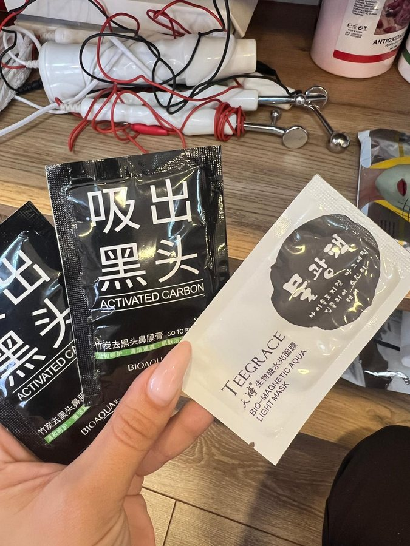
• Uygulama Bölgesi: T-bölgesi (alın, burun, çene) yoğun olmak üzere tüm yüze homojen sürülür. Göz çevresi ve dudaklar açıkta bırakılır.
• Buhar Mesafesi & Açı: Ozonlu buhar başlığı danışanın yüzüne 25-30 cm mesafeden, çene altından 45° yukarı açıyla verilir. Danışanın nefesini tıkamamalıdır.
• Etki Mekanizması: Ilık nemli ortamda papain enzimleri gözenek ağzındaki ölü keratin bağlarını eritir (10 dk). Süre sonunda ılık süngerle silinir.
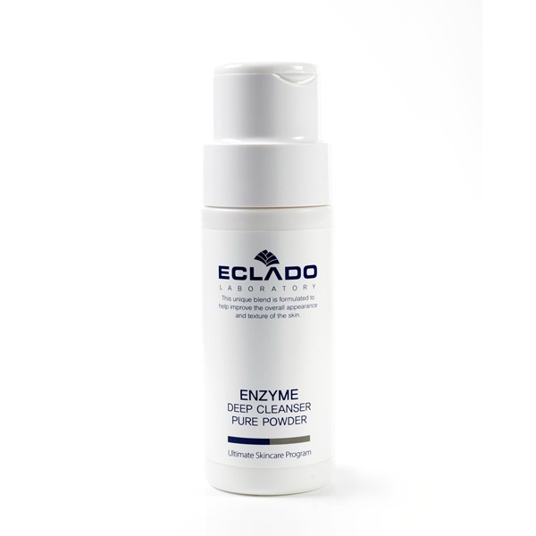
• Uygulama Bölgesi: Burun üzeri, burun kanatları, çene çukuru, kaş ortası ve alın.
• Açı & Tutuş Kuralı: Metal kavitasyon ucu cilde tam 45° açıyla oturtulur. Uç cilde batırılmaz, hafif baskıyla taranır.
• Hareket Vektörü: Burun kanadından burun sırtına doğru yukarı, çeneden dudak altına doğru yukarı yönde 28 kHz ses dalgasıyla siyah noktalar pürüzsüzce taranıp çıkartılır (7 dk).
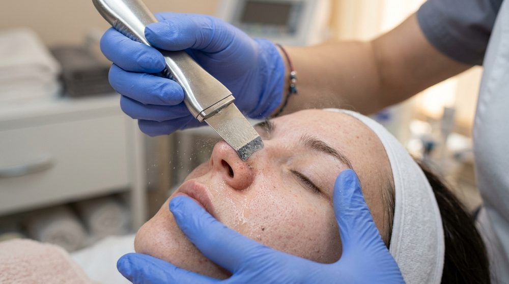
• Uygulama Bölgesi: Çene hattından başlanır, yanaklar, burun kanatları ve alına çıkılır.
• Açı & Tutuş Tekniği: Spiral vorteks başlık cilde tam 90° dik basılır. Başlık aynı noktada 2 saniyeden fazla sabit tutulmaz (morarma olmaması için).
• Hareket Yönü: Çeneden kulağa yatay, burun kanatlarından şakaklara doğru dışa çekerek kaydırılır. 13 dakikada tüm gözenek sebumları rezervuara çekilir.
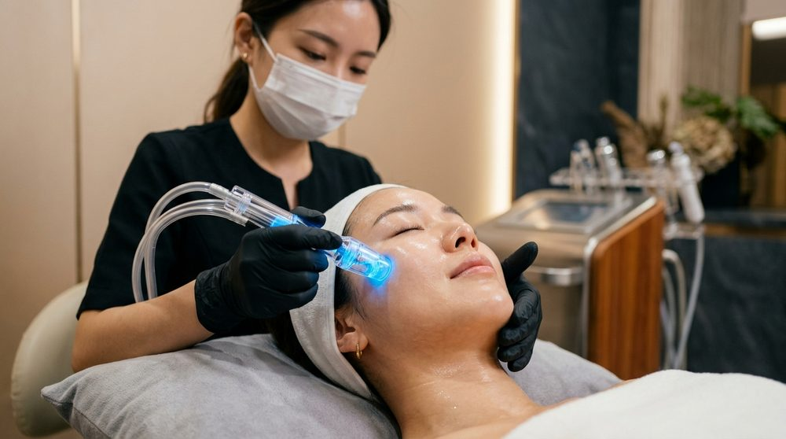
• Mesafe & Açı: Tabanca ucu ciltten tam 10 cm mesafede, cilde 90° dik tutulur.
• Hareket Vektörü: Alından başlanarak boyuna kadar yukarıdan aşağıya tarama şeritleri halinde yüksek basınçlı mikronize sisleme yapılır. Gözenek diplerine nem kilitlenir (10 dk).
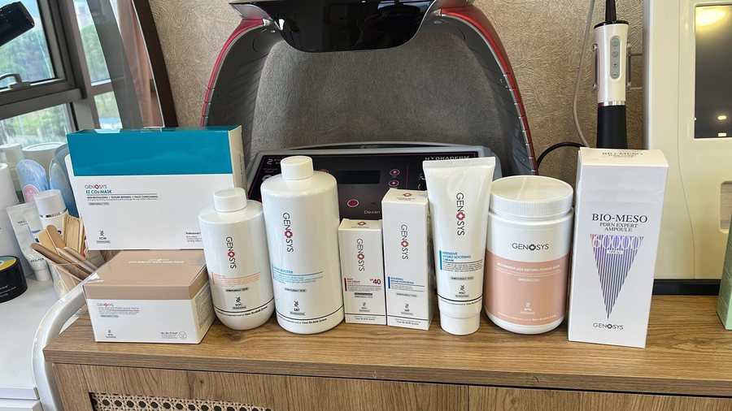
• Uygulama Bölgesi: Genişleyen gözeneklerin yoğun olduğu burun, yanaklar, alın ve çene.
• Açı & Hareket: Soğuk prob cilde düz oturtulur, merkezden kulaklara doğru sürekli küçük dairesel hareketlerle kaydırılır. Asla tek bir noktada sabit bırakılmaz (donma yanığı olmaması için). Vakumdan açılan gözenekler 7 dakikada büzülüp kilitlenir.
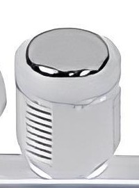
• Sürüş Alanı & Sınırlar: Spatula 30° açıyla tutularak çeneden alına 2-3 mm kalınlıkta sürülür. Göz kapakları ve dudaklar AÇIKTA BIRAKILIR.
• LED Ayarı: Danışanın gözlerine opak siyah gözlük takılır. PDT tüneli 15 cm yukarıdan Yeşil LED (525 nm) moduna alınıp 18 dk çalıştırılır. Süre sonunda maske kenarlarından tutulup tek kalıp soyulur.
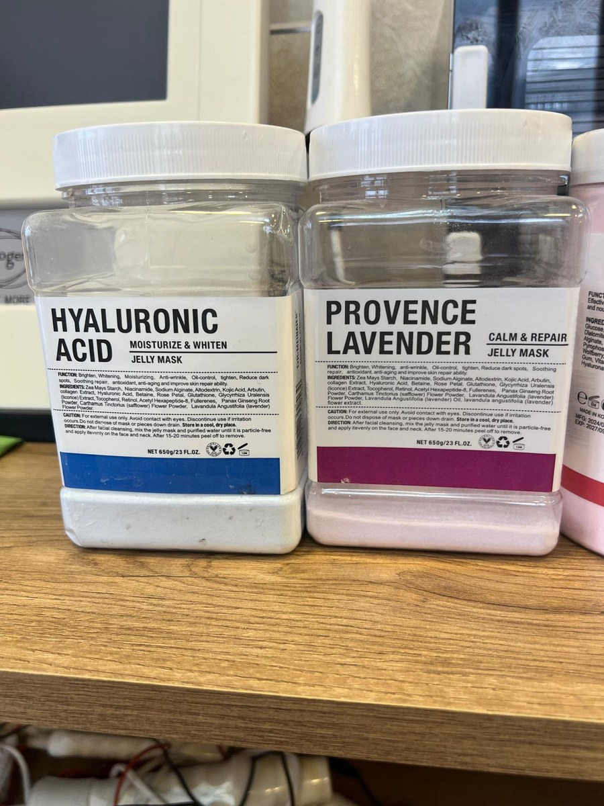
• Güneş Kalkanı: 1.5 ml Genosys Multi Sun SPF 40 çene, yanak ve alına eşit dağıtılıp hafif yukarı vuruşlarla yedirilir (5 dk). Seans tamamlanır.
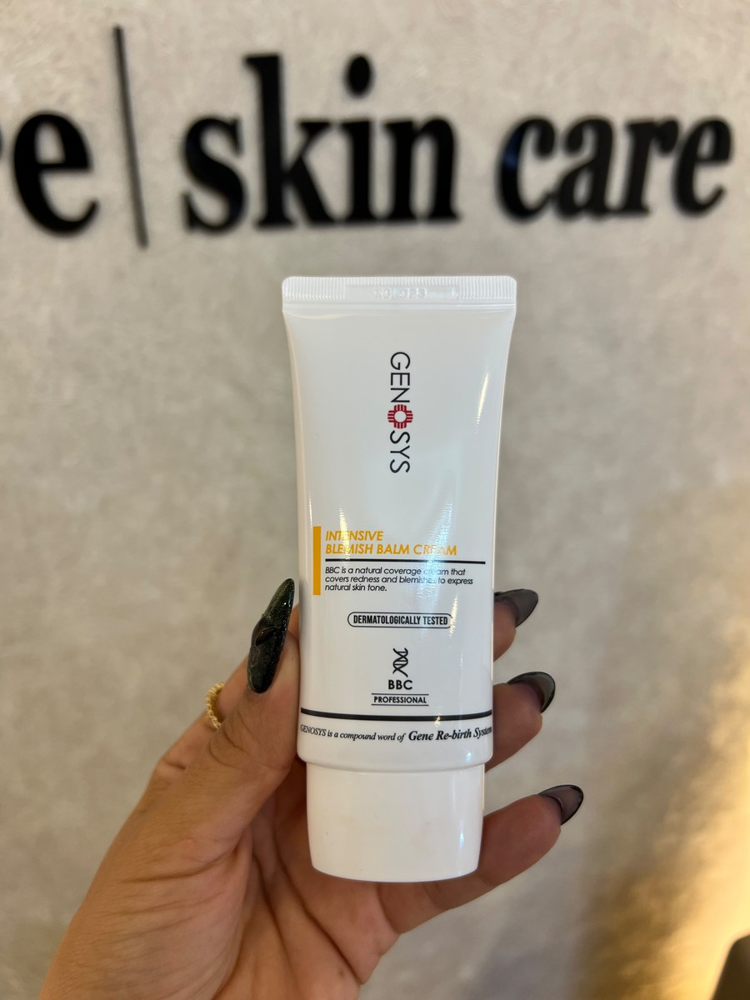
🫧 2. Seans: CO2 Oksijen Maskesi & Ton Eşitleme
• Kritik Kural: Ilık süngerle durulandıktan sonra kağıt havlu ile tampon yapılarak cilt tamamen KURU hale getirilir. Yüzde tek damla su kalmamalıdır (su, Karboksi jelin kimyasal aktivasyonunu bozar).
• Uygulama Alanı & Sınırlar: Spatula 15° açıyla yatay tutularak jel; gıdı, boyun, çene, yanaklar, burun ve alına 2-3 mm kalın bir örtü gibi yayılır. Göz kapaklarına ve dudaklara asla değdirilmez. (5 dk).
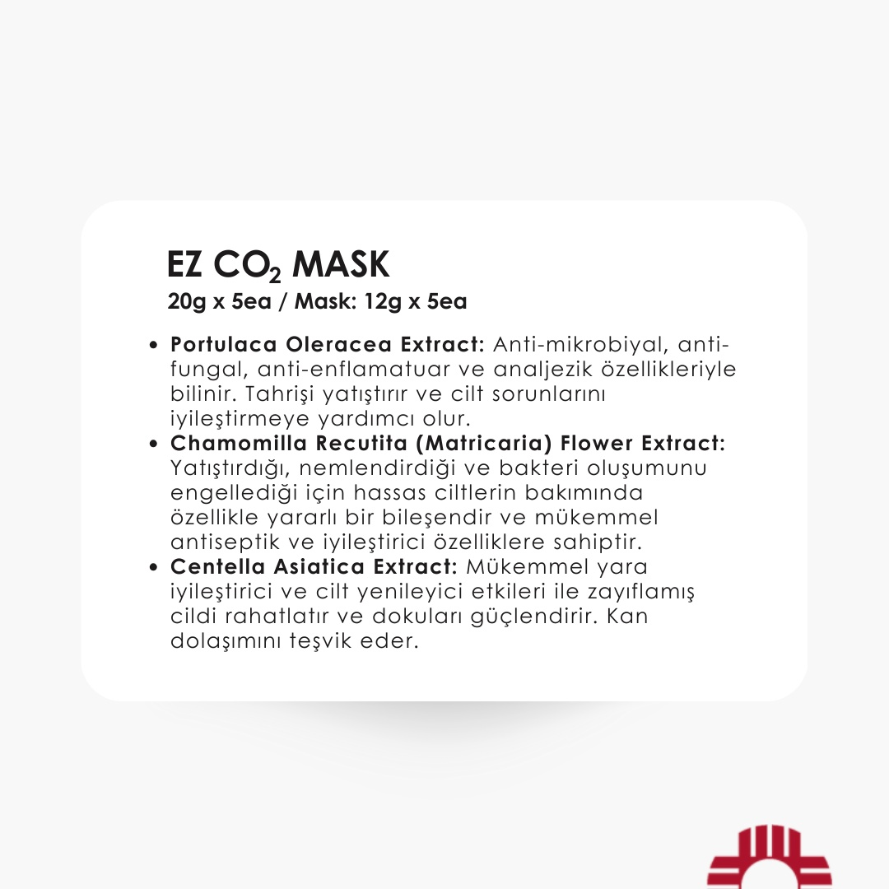
• Pres Tekniği: Avuç içleriyle maskeye 90° dik tampon baskı yapılır. CO2 gazı açığa çıkar; soda çıtırtısı ve karıncalanma başlar.
• Reaksiyon Tazeleme: Her 4 dakikada bir eldivenle tüm yüze 30 saniye hafif presleme yapılır (gazın derine itilmesi için). Toplam 15-20 dakika bekletilir. (Klinik Hassasiyet Notu: İnce veya reaktif ciltlerde 10-12 dk yeterlidir; kalın/yağlı ciltlerde tam 20 dk bekletilir).
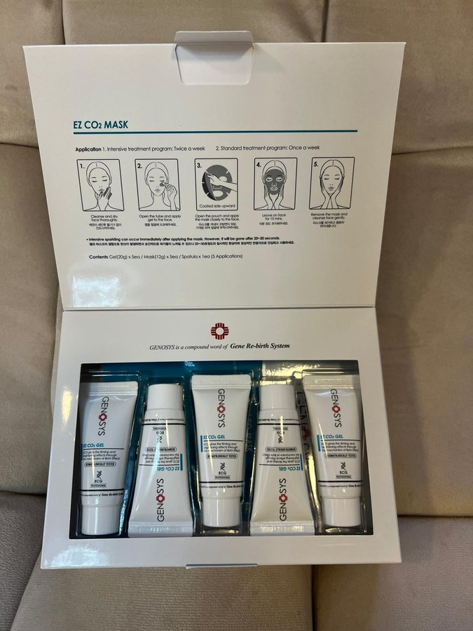
• Silme: Kalan jel artıkları ılık arıtılmış suya batırılmış ıslak kompres süngerlerle 2 tur tamamen temizlenir. Yüzde oluşan canlı pembeleşme (hiperemi), kılcallardan dokuya yoğun O2 pompalandığının klinik kanıtıdır.
• Uygulama Alanı: Karboksi sonrası hafif ısınan yanaklar, alın, çene ve burun çevresi.
• Hareket Vektörü: Çene ucundan kulak memelerine doğru, burun kenarlarından şakaklara doğru dairesel buz masajı yapılır. Karboksi ısısı anında sıfırlanır, kızarıklık söndürülür ve gözenekler kilitlenir (10 dk).
• Sürüş Alanı & Sınırlar: Boyun ve tüm yüze 2 mm kalınlıkta sürülür. Göz çevresi ve dudaklar AÇIKTA BIRAKILIR.
• Göz Güvenliği: Işığı açmadan önce danışanın gözlerine kabindeki siyah opak silikon gözlük takılır veya ıslak pamuk koyulur.
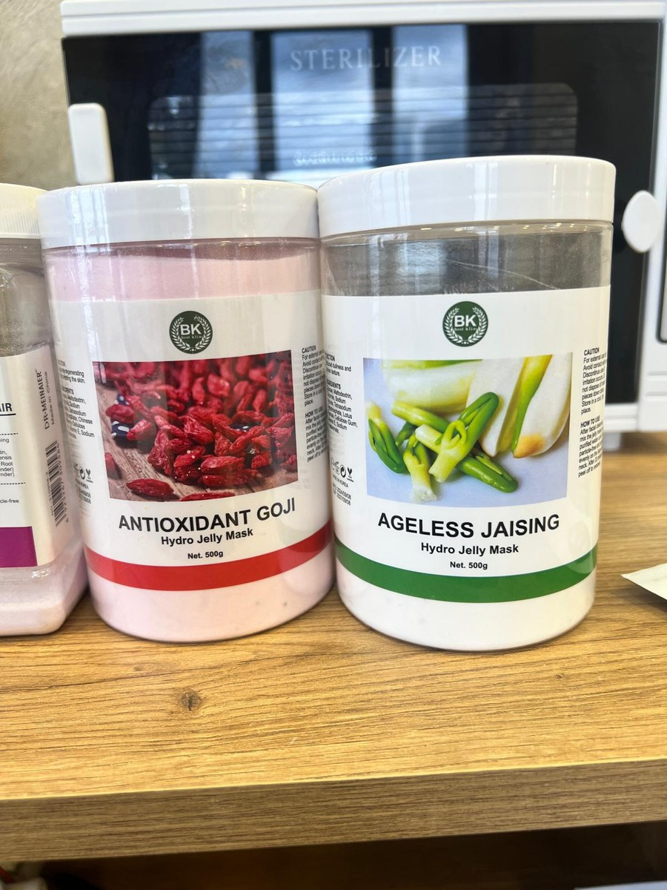
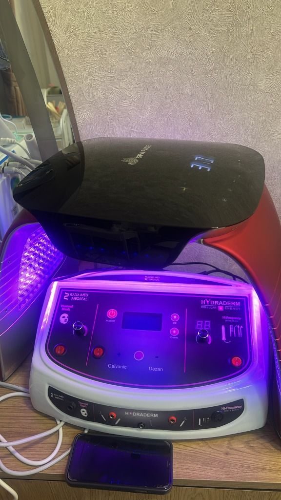
• Uygulama: Tüneli müşterinin yüzünün üstüne köprü gibi koyun (yüze temas etmez, 10 cm havada durur).
• Göz Koruması: Müşterinin gözüne ıslak pamuk veya siyah opak gözlük koyun.
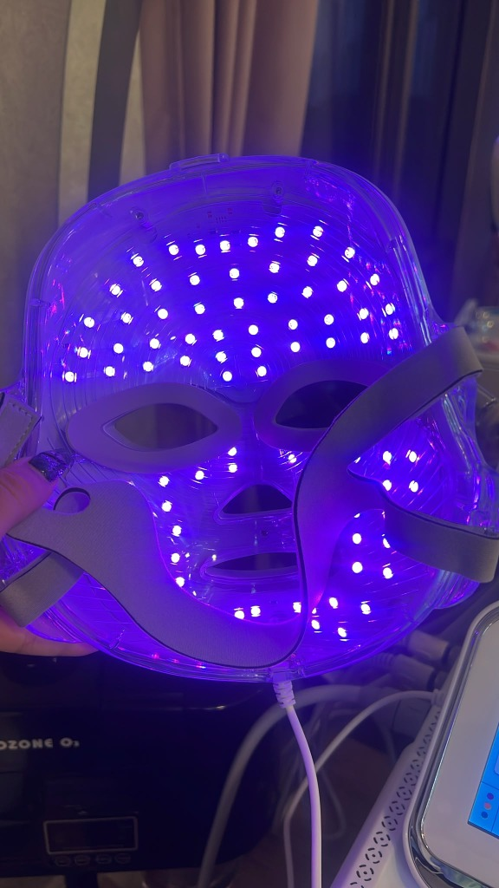
• Uygulama: BK Hydro Jelly maskeyi sürdükten sonra bu maskeyi doğrudan yüze kapatıp arkasındaki gri lastiği geçirin.
• Göz Koruması: Maskenin kendi içinde siyah silikon göz pedleri zaten vardır, ekstra bir şey istemez.
• Güneş Kalkanı: 1.5 ml Genosys Multi Sun Cream SPF 40 sürülüp hafif yukarı dokunuşlarla emdirilir (4 dk). Seans tamamlanır.
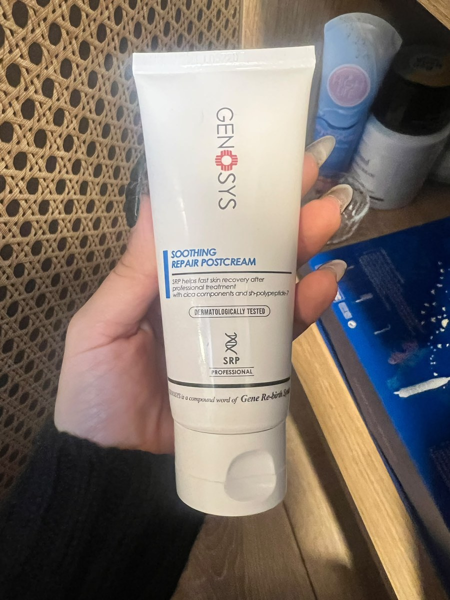
👑 3. Seans: Somon DNA (PDRN) + RF Lifting & Porselen Mühürleme
• C Vitamini Cilalama: Mormed Aqua başlığı Chamber C (C Vitamini solüsyonu) moduna alınır. En düşük vakum seviyesinde (seviye 2), T-bölgesi ve yanaklar pürüzsüzleştirilir (6 dk).
• Uygulama Alanı & Tutuş Açısı: Prob cilde tam 90° dik bastırılmadan oturtulur.
• Hareket Vektörü: Çene ucundan kulak önüne doğru yukarı (V-Line), nazolabial çizgilerden şakaklara doğru yukarı, kaş ortasından saç çizgisine doğru yukarı yönde taranır. Kolajen lifleri toparlanır (17 dk).
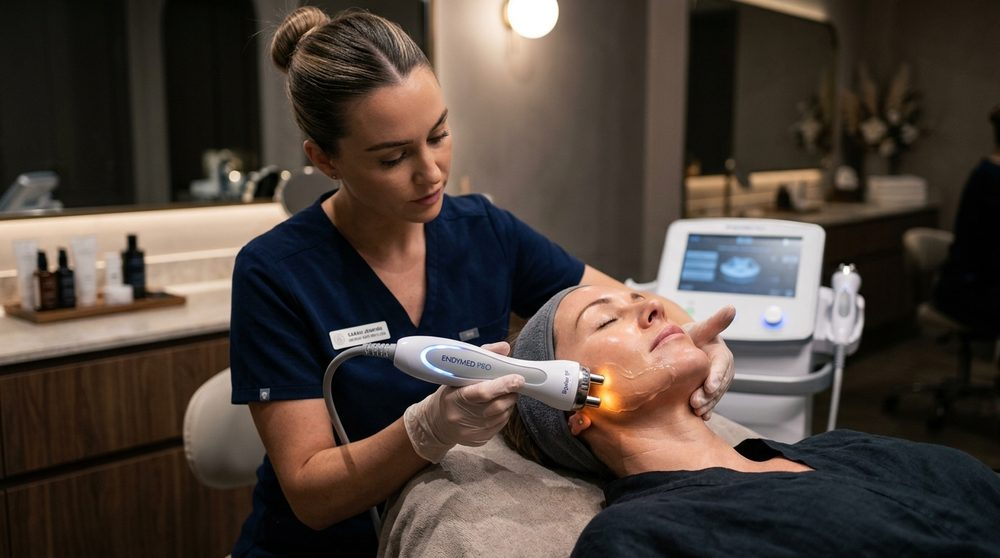
• Açı & Hareket: Mormed Ultrasonik başlığı cilde 45° açıyla oturtulup 1 MHz titreşim dalgalarıyla merkezden dışa dairesel taranır. Somon DNA molekülleri dermis katmanına zerk edilir (15 dk).
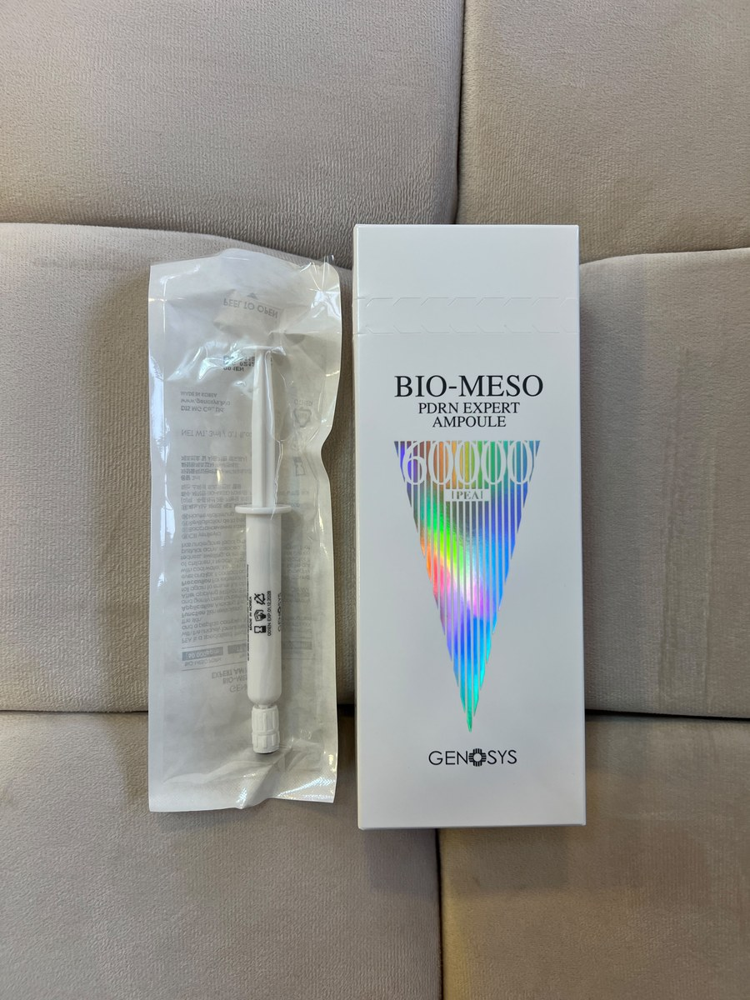
• Soğuk Kilit: Mormed Cryo başlık -5°C'de 5 dk gezdirilerek dermise zerk edilen Somon DNA hücre içine hapsedilir (5 dk).
• LED Ayarı: Danışanın gözlerine opak gözlük takılır. PDT tüneli 15 cm yukarıdan Sarı LED (590 nm) moduna alınıp 20 dk çalıştırılır. Işığı ayna gibi kıran kristal cam parlaklığı kilitlenir. 20 dk sonra maske çıkarılır, kalan serum parmak uçlarıyla yedirilir.
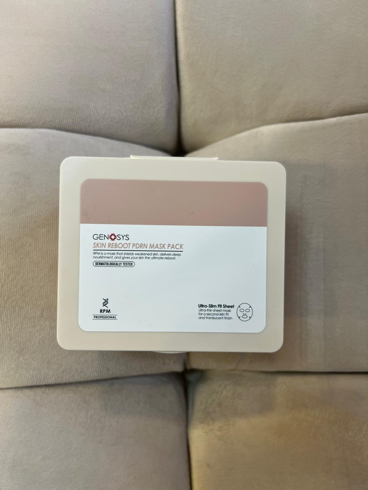
• Final Bariyer: 1.5 ml Genosys Multi Sun SPF 40 sürülerek seans tamamlanır (4 dk). Danışana aynada cam parlaklığı gösterilir.
💬 Gülşah'ın Müşteriye Kabinde Söyleyeceği Cümle:
"1. seansımızda gözenekleri vakumla boşaltıp zemin hazırladık. Bugün afişimizdeki 2. seans olan Genosys Karboksi CO2 Bohr bakımını yapıyoruz; dokularınıza saf oksijen pompalayacağız. 3. seansımızda ise Somon DNA ve radyofrekans lifting ile cildinizi porselen cam gibi mühürleyeceğiz."
Fotoğraflanan 20 ürün ve cihazın tamamı; farmakolojik içerikleri, seans dozajları, uygulama sıraları ve asla kullanılmayacağı kontrendikasyonlarıyla tek tek aşağıda listelenmiştir:
Elimizdeki 25 Ürünün 3 Temel Bölümde Tam Sınıflandırması
Kabindeki her bir ürünün hangi kategoride yer aldığını, başlangıçta mı yoksa cihazla mı kullanılacağını aşağıdaki 3 bölümlük haritadan anında kontrol edebilirsiniz:
- Genosys DMR: Çift fazlı göz & dudak makyaj temizleyici.
- Genosys Snow O2 (SOC): Mikro oksijen köpüren yüz jeli.
- Eclado Célavi Foam: Bariyer koruyucu prebiyotik köpük.
- Eclado Enzyme Powder: Papaya/ananas meyve enzim toz peelingi.
- Genosys Snow Booster (SBT): 1000ml kabin nemlendirici tonik.
- Eclado A.C Oil Free Toner: Yağsız akne ve sebum kontrol toniği.
- Clean & Active Tonik (500ml): Peeling sonrası pH 5.5 dengeleyici.
- Genosys PDRN Expert Ampoule: 60,000 ppm Somon DNA şırınga.
- Genosys EZ CO2 Mask Kit: Bohr etkili karboksiterapi kiti.
- Eclado Melaser Cream: Alpha-Arbutin + AHA leke açıcı.
- Eclado A.C Centella Mask: Sakinleştirici Cica kil maskesi.
- Eclado Shining Moisture Cream: Su damlacıklı ışıltı masaj kremi.
- Erfland Massage Cream: A, B, C, D Vitaminli kolajen masaj kremi.
- Eclado Soothing Mask: Büyük boy derin nemlendirme maskesi.
- Dr. Lift Alçı Maskesi: Termal kuruyan V-line sıkılaştırıcı alçı.
- Genosys PDRN Mask Pack: Biyoselüloz somon DNA kağıt maske.
- Bioaqua Ban Bang: Bölgesel çift renkli T-bölgesi kil maskesi.
- Genosys SRP Onarıcı: Post-operatif doku bariyer kremi.
- Genosys BB Krem: SPF koruyucu porselen bitirici krem.
- Bioaqua Aktif Karbon: Burun siyah nokta soyulabilir maskesi.
- Teegrace Bio-Magnetic Mask: Mıknatıs teknolojili cam cilt şasesi.
- BK Hydro Jelly Maskeler: Goji, Lavender & Hyaluronic jöle.
- First Dating Toz Şaseleri: Altın, Kiraz, Lavanta, Kivi saşeleri.
- Altın Termal Maske: Cihaz ısı ve ışık uyumlu emilim maskesi.
- High Life Hydro Gel: RF, Ultrasound ve Galvanik iletkenlik hidrojeli.
- Galvanic Modu: Pozitif (+) itme gücüyle serumları 10 kat derine iletme.
- Dezan Modu: Negatif (-) kutupla gözenek içi sebumu sabunlaştırma.
- Spa Face LED Kubbe: Isı ve fototerapiyle kan dolaşımı ve maske kilitleme.
- Silindir (Roller) Başlık: Geniş yüzeylerde homojen akım kaydırma.
- Çift Top (Y-Probe): Kas stimülasyonuyla ameliyatsız V-Lifting.
- Tekli Metal Top Başlık: Göz çevresi ve nazolabial mikro çalışma.
Guinot / Raha Med Hydraderm (Spa Face) Kabin Kullanım Kılavuzu
Elindeki Genosys, Eclado ve Dr. Lift Ürünleriyle 4 Aşamalı Tam Klinik Entegrasyon Protokolü
Elektriksel Gözenek Sabunlaştırma (Saponifikasyon)
• Amaç: Siyah noktaları ve sertleşmiş sebumu manuel sıkmadan, kimyasal sabunlaşma tepkimesiyle eritip yüzeye çıkarmak.
• Hangi Başlık: Silindir (Roller) veya dar alanlar için Tekli Metal Top.
• Hangi Ürün: Negatif (-) yüklü bazik baz (Genosys Snow O2 veya az suyla eritilmiş Eclado Enzyme Powder).
• Konsol Ayarı: "Dezan" seçilir (Otomatik Negatif (-) akım verir). Akım cilde temas ettikten sonra Seviye 2-3'e yükseltilir.
• Topraklama: Kırmızı kablolu metal çubuk danışanın avucuna verilir.
• Bitiriş: Yüz ıslak süngerle çok iyi silinir; gevşeyen yağlar spatulayla sıyrılır. Ardından cildin pH dengesi için Clean & Active Tonik sürülür.
İyonizasyon ile Dipten Serum İtme
• Amaç: Büyük moleküllü aktifleri (Somon DNA PDRN, Hyaluronik Asit) elektrik akımının itici gücüyle dermise zerk etmek.
• Hangi Başlık: Silindir (Roller) Başlık (yüz geneli) ve Tekli Top (göz çevresi/burun).
• Hangi Ürün: Genosys Bio-Meso PDRN Expert Somon DNA (2 ml) veya Eclado Melaser. Üzerine kesintisiz iletkenlik için High Life Hydro Gel maske gibi kaplanır.
• Konsol Ayarı: "Galvanic" seçilir. Pozitif (+) kutup ile itme sağlanır.
• Uygulama: Başlık ciltten hiç kaldırılmadan, aşağıdan yukarıya doğru lifting yönünde yavaşça kaydırılır (hafif metal tadı normaldir).
• Bitiriş: Yüz ASLA yıkanmaz, kalan jel cilde yedirilir.
Çift Top Y-Probe ile Kas Jimnastiği & V-Lifting
• Amaç: Düşük frekanslı akımla yüz kaslarına pasif jimnastik yaptırarak yüz ovalini, elmacık kemiklerini ve gıdıyı yukarı askılamak.
• Hangi Başlık: Çift Başlıklı Top (Y-Probe).
• Hangi Ürün: Yoğun High Life Hydro Gel.
• Vektör Hatları: İki topun arasına kas sıkıştırılır:
1. Çene ucundan kulak memesine (Jawline),
2. Dudak kenarından kulak ortasına (Zigoma),
3. Kaş üzerinden saç çizgisine (Alın açma).
Her hat kası 3 saniye dondurarak çekilir, 3'er tekrar yapılır.
Termal Isı & Fototerapi LED Kubbe Kapanışı
• Amaç: Maskelerin havayla temasını keserek emilimini 10 kat artırmak, mikrosirkülasyonu tetikleyip kolajen üretimini kilitler.
• Hangi Ürünler: Dr. Lift Alçı Maskesi, Genosys EZ CO2 Karboksi Maskesi veya Genosys Bio-Ferment Toz Maskesi.
• Uygulama: Maske kalın tabaka serilir. Cihazın üst kırmızı-siyah kubbesi yüzün üzerine şemsiye gibi (cilde değmeden) kapatılır.
• Konsol Ayarı: Thermal Mask 15-20 dk. LED modu seçilir (Leke ve anti-aging için Kırmızı, akne/hassasiyet için Mavi).
• Kapanış: Maske tek parça soyulur, Genosys SRP krem sürülüp Genosys BB Krem ile sonlandırılır.
Mormed 7'li Hydrafacial: Hassas Güç Kademeleri & 9 Aşamalı Seans Akışı
Morarma ve Yanma Riskini Sıfırlayan Kademe Kalibrasyonu, A-B-C Şişe Seçimi ve 63 Dakikalık Standart Seans
🎚️ 1. Cihaz Başlık Güç Kademeleri (Morarma & Yanma Önleme Tablosu)
• Normal / Karma: %50 - %60 (Standart gözenek çekişi).
• Yağlı / Kalın / Yoğun Siyah Nokta: En fazla %70 - %80.
⚠️ Water Flow (Su Vanası): Daima orta (mid) ayarda olmalıdır. Cilt kuru kalırsa tahriş eder!
• Hedef Isı: 39°C - 41°C tatlı kaplıca sıcaklığı.
• Maksimum: Danışanın hissiyatına göre en fazla Kademe 5 - 6.
⚠️ Hayati Kural: Başlık sabit tutulursa cildi yakar! Daima yavaş ve sürekli kaydırılır. İletken jel şarttır.
• Mod Seçimi: Sürekli (Continuous) modu seçilir.
• Amaç: Genosys Somon DNA ve nem moleküllerini hücre aralarını açarak dermise iletir.
• Doğrulama: Metal uçtaki sudan kavitasyon sisi/buharı fışkırdığı an doğru güçtesin.
• Açı: Cilde 45 derece yatık tutulur. Cilt mutlaka ıslak olmalıdır.
🧪 2. A, B, C Solüsyon Şişelerinin Seçim Mantığı & Panel Vanası
• Ne Zaman Seçilir: İlk kez gelen, aşırı yağlı olmayan, genel ölü tabaka arındırması ve leke aydınlatması isteyen danışanlarda seçilir.
• Ne Zaman Seçilir: Burnu tamamen dolu, gözenekleri tıkalı, parlayan danışanlarda gözenek içine dikey nüfuz edip taşlaşmış sebumu sökmek için seçilir.
• Ne Zaman Seçilir: Pullanmış, nemsiz, bariyeri zayıf veya anti-aging isteyen danışanlarda asitsiz, tamamen nem basarak vakumlamak için seçilir.
⏱️ 3. Dokuz (9) Adımlık Standart Seans Akış Çizelgesi (63 Dakika)
Raha Med Hydraderm 2 Galvanik Doğru Akım, Dezan & İyontoforez Başlık Ailesi
Fotoğrafta Elde Tutulan 4 Metal Başlık, Kırmızı Topraklama Çubuğu ve Konsol Polarite Rehberi
• DEZAN Modu (-) Negatif Kutup: Ciltteki donmuş sebumu sabunlaştırarak gözenek içinden dışarı çeker (Desincrustation).
• İYONTOFOREZ Modu (+) Pozitif Kutup: Leke serumu (Eclado Melaser), C vitamini veya hyaluronik asidi aynı kutup itme prensibiyle derine iter.
2. Küresel Prob / Tek Bilyeli Başlık (Ball / Sphere): Burun kanatları, göz altı torbaları, kaz ayakları ve nazolabial kıvrımlar gibi kıvrımlı mikro bölgelerde noktasal iyon transferi ve lenf drenajı yapar.
3. Çift Küre / Y-Çatal Başlık (Double Ball / Y-Fork): Çene kemiği (Jawline V-Line), zigoma ve gıdı dokusunu iki bilye arasına sıkıştırarak yukarı doğru kaydırılır. Mikro-akımla kas liflerini uyararak anında toparlanma ve lifting sağlar.
4. T-Bar / Döner Silindirik Rulo Başlık (Roller): Alın yatay çizgileri ve boyun bantlarında akımı eşit dağıtarak kaydırılır. Tek noktada akım birikmesini önleyerek konforlu iyon geçişi sunar.
🔴 Kırmızı Kablolu Metal Çubuk (Topraklama Barı): Devrenin kapanması için danışanın avucuna nemli süngerle sarılarak verilir. Danışan bu çubuğu tutmazsa devre tamamlanmaz ve akım iletilemez!
Kalp pili (pacemaker), hamilelik, yüz bölgesinde metal platin/vida, aktif epilepsi ve açık cerahatli enfeksiyonu olan danışanlara KESİNLİKLE GALVANİK AKIM UYGULANMAZ! Başlıklar cilt üzerinde asla sabit bekletilmez, daima kaydırılır.
PDT LED Fototerapi Işık Tüneli & Ozonlu Buhar Makineleri
Epilepsi hastalarında yanıp sönen ışık modları ASLA kullanılmaz (sabit ışık verilir). Kuperozlu ve rozasealı cilde ozonlu sıcak buhar 4 dakikadan fazla tutulmaz (kılcalları genişletip çatlatır).
Genosys Profesyonel Kabin Masası (Fotoğraftaki 9 Ürünün Soldan Sağa Analizi)
Gülşah Taşan’ın kabin masasındaki gerçek yerleşimidir. Aşağıdaki fotoğrafta arka planda Hydraderm cihazı, ön sırada ise soldan sağa dizilmiş 9 orijinal Genosys ürünü yer almaktadır:
Genosys Skin Reboot PDRN Mask Pack
İşlevi: Çoklu yaprak maskeler barındıran yoğun yenileyici settir. Somon DNA (PDRN), kolajen, seramid ve pantenol içerir. Agresif işlemlerden sonra hasarlı bariyeri anında yatıştırır.
Genosys EZ CO2 Carboxy Mask Kit
İşlevi: Bohr etkisiyle kandan cilde yoğun oksijen pompalayan karboksiterapi maskesidir. Gözenekleri derinlemesine boşaltır ve cildi parlatır.
Genosys Snow Cleanser (Snow O2 / SOC)
İşlevi: Kuru cilde sürüldüğünde kendi kendine mikro oksijen köpükleri oluşturan arındırıcıdır. Gözenek diplerindeki toksinleri ovmadan yüzeye iter.
Genosys Snow Booster Kabin Toniği (1000ml)
İşlevi: Cildi yatıştıran, yoğun nem veren ve pH 5.5 dengesine getiren kabin toniğidir. Oksijen sprey tabancasıyla nano-sis olarak püskürtülür.
Genosys Multi Sun Cream SPF 40
İşlevi: Foto-yaşlanma ve leke önleyici profesyonel mineral/kimyasal hibrit güneş kalkanıdır. Seans sonrası açılan cildi ultraviyoleden %100 korur.
Genosys Soothing Repair Postcream (SRP)
İşlevi: Peeling, ekstraksiyon, vakum veya RF sonrası kızaran ve tahriş olan epidermisi anında onaran medikal peptit ve Centella kremidir.
Genosys Intensive Hydro Soothing Cream (HSC)
İşlevi: Nemsiz ve kuru ciltler için derin su basıcı kremdir. Betain ve Hyaluronik Asit ile cildi neme boğar, ağırlık bırakmaz.
Genosys Bio-Ferment Age Defying Powder Mask
İşlevi: Fermente probiyotik ve kolajen içeren modelleme tozudur. Sürülen Somon DNA serumunu hapsedip cildi yukarı askılar ve sıkılaştırır.
Genosys Bio-Meso PDRN Expert Ampoule (60.000 ppm)
İşlevi: 60.000 ppm saf Somon DNA konsantresidir. Derin kırışıklıkları doldurur, fibroblastları tetikler ve cilde porselen cam ışıltısı verir.
Genosys Snow O2 Cleanser & DMR Makyaj Temizleyici
Açık kanamalı lezyonlar üzerine bastırarak ovulmaz. Göz içine kaçırılmamalıdır (göz ve dudak makyajı için Genosys DMR kullanılır).
Genosys Snow Booster Kabin Toniği (1000ml)
Herhangi bir kontrendikasyonu yoktur; hipoalerjeniktir.
Genosys EZ CO2 Carboxytherapy Mask Kit
HAYATİ UYARI: Aktif kızarık rozasea ve kılcal damar çatlağı olan ciltlere ASLA UYGULANMAZ! Aynı seansta AHA/Glikolik Asit (Melaser) veya kimyasal asit peeling ile ASLA üst üste sürülmez (kimyasal yanık yapar). Danışana önceden hafif ısınma ve çıtırtının normal olduğu söylenmelidir.
Genosys Bio-Meso PDRN Expert Ampoule (60.000 ppm)
Balık ve deniz ürünleri alerjisi bilinen danışanlarda ön kol içi yama testi (patch test) yapılmadan doğrudan yüze uygulanmaz.
Genosys Skin Reboot PDRN Mask Pack
İltihaplı ve yoğun cerahatli püstüler aknede gözenek ağzını tıkamaması için tercih edilmez (yerine Eclado Centella maskesi uygulanır).
Genosys Bio-Ferment Age Defying Powder Mask
Danışanın kapalı alan veya nefes alma kaygısı varsa burun ve gözler kesinlikle açık bırakılır.
Genosys Intensive Hydro Soothing (HSC) & Soothing Repair (SRP)
Aşırı yağlı ve iltihaplı ciltlerde SRP kremi tüm yüze kalın sürülmemelidir; sadece HSC tercih edilmelidir.
Genosys Multi Sun Cream SPF 40 & BBC Blemish Balm Cream
Akşam saatlerinde yapılan ve danışanın doğrudan uyumaya gideceği seanslarda BBC krem sürülmez; sadece HSC nemlendirici sürülüp bırakılır.
Eclado & Profesyonel Bakım Rafı (11 Ürünün Tam Analizi)
Aşağıdaki görselde kabindeki ürünler soldan sağa numaralandırılmıştır. Her ürünün resimdeki yeri, farmakolojik işlevi, cihaz uyumu ve müşteriye verilecek hazır cümleler tek tek çıkartılmıştır:
Eclado Célavi Cleansing Face Foam (250 ml)
İşlevi: Cildi kurutmadan günlük kirden, makyaj kalıntılarından ve fazla sebumdan arındıran profesyonel yüz temizleme köpüğüdür. Cilt bariyerini koruyarak nazik bir temizlik sağlar.
Kabin Dozu: 2 pompa köpük.
Uygulanış: Islak cilde dairesel masajla yedirilir, ılık süngerle silinir. Her seansın 1. adımıdır.
Uygun Cilt: Tüm cilt tipleri (özellikle kuru ve hassas).
Eclado A.C Oil Free Toner (Yağsız Akne Toniği)
İşlevi: Yağlı ve akneye eğilimli ciltler için özel formül. Yağ-nem dengesini sağlar, aşırı sebumu frenler, gözenekleri sıkılaştırır.
Kabin Dozu: 3-4 ml pamuk pede veya cilde tamponlama.
Uygulanış: Temizleme ve vakum sonrası yağlı bölgelere tamponlanarak uygulanır.
Kontrendikasyon: Çok aşırı kuru ve nemsiz pullanmış ciltlerde tüm yüze boca edilmez (sadece T bölgesine).
Eclado Melaser Turn Over Cream (Leke Açıcı)
İşlevi: Cilt tonu eşitsizliklerini, melazma ve sivilce lekelerini (PIH) hedef alan aydınlatıcı krem. Hücresel döngüyü (turn-over) hızlandırarak taze cilt çıkarır.
Cihaz Uyumu: Ultrasound veya Galvanik (+) İyontoforez disk probu ile 5 dk tamponlanır. Yeşil LED (525nm) ile desteklenir.
Hayati Kontrendikasyon: ⛔ Tatile çıkacak/solaryuma girecek danışana sürülmez! Ardından mutlaka SPF 40 güneş kremi sürülmelidir.
Eclado Enzyme Deep Cleanser Pure Powder
İşlevi: Suyla birleştiğinde ipeksi köpüğe dönüşür. Papaya ve ananas enzimleri (papain/bromelain) ile ölü deri keratin bağlarını çizmeden eritir.
Uygulanış: Kasede yelpaze fırçayla köpürtülür. Buhar altında 5-7 dakika bekletilip spatulayla temizlenir.
DİKKAT: Kuperozlu/kılcal damarlı ciltlerde BUHARSIZ oda sıcaklığında bekletilir.
Eclado A.C Centella Mask (Sakinleştirici Cica Kil)
İşlevi: Yağlı, sivilceli ve kızarık ciltler için kremsi Cica kil maskesi. Centella Asiatica ve çay ağacı ile yangıyı söndürür, fazla yağı absorbe eder.
Kabin Dozu: 8-10 ml kalın katman. Bekleme: 12 - 15 dk.
Cihaz Uyumu: 415nm Mavi PDT LED altında bekletilerek sivilce bakterileri öldürülür.
Clean & Active Tonic (T-Cosmetics / Klapp)
İşlevi: Derin temizleme ve peeling sonrasında cildin bozulan pH değerini hızla 5.5 ideal dengesine çeken profesyonel arındırıcı ve canlandırıcı kabin toniğidir.
Kabin Dozu: 5 ml pamuk pede dökülerek tüm yüze ve boyna uygulanır.
Sırası: Peelingden hemen sonra ve maskeden önce cildi nötrlemek için kullanılır.
Eclado Shining Moisture Massage Cream (300 ml)
İşlevi: Masaj esnasında cilde sürüldüğünde su damlacıklarına dönüşen özel Kore formülü. Cildi derinlemesine nemlendirir, ayna gibi cam cilt ışıltısı verir.
Kullanım: Kuru ve mat ciltlerde yüz ve dekolte masajı esnasında 5-8 ml uygulanır.
Kontrendikasyon: Aktif iltihaplı kistik akneli ciltlerde sürtünmeli masaj yapılmaz.
Erfland Vitaminli Cilt Masaj Kremi (A, B, C, D Vitaminli)
İşlevi: A, B, C ve D vitamin kompleksleri içeren zengin anti-aging masaj kremidir. Cildin elastikiyetini artırır, kolajen üretimini tetikler ve kırışıklıkları açar.
Kullanım: Olgun, elastikiyetini kaybetmiş ve nemsiz ciltlerde toparlayıcı lifting masajı için 5 ml kullanılır.
Cihaz Uyumu: Sıcak çekiç veya Radyofrekans öncesi manuel kas stimülasyonunda mükemmeldir.
Eclado Laboratory Soothing Mask (Deep Hydration)
İşlevi: Yoğun nemlendirme ve bariyer tamir serisi (Deep Hydration Series). İşlem görmüş, kurumuş veya lazer/vakum sonrası hassaslaşmış cilt bariyerini anında toparlar.
Kabin Dozu: 10 - 15 ml tüm yüze kalın tabaka.
Bekleme: 15 dakika. Ardından hafif masajla emdirilir veya fazlası ılık nemli pedle alınır.
Bioaqua Ban Bang Double Color Mask (Bölgesel İkili Kil)
İşlevi: Tek kavanozda çift formül! Yeşil kısım (T bölgesi, alın, burun ve çene) aşırı sebum ve siyah noktaları arındırır; sarı kısım (yanaklar) kuru bölgeleri besler ve nemlendirir.
Kullanım Kuralı: Yeşil kısım ASLA kuru yanaklara sürülmez! Sadece yağlı T bölgesine uygulanır.
Bekleme Süresi: 10 - 12 dakika (tam kurumadan ılık suyla yıkanır).
High Life Hydro Gel (Cihaz İletkenlik Hidrojeli)
İşlevi: Ultrasonik ses dalgaları, Radyofrekans ve Galvanik Doğru Akım uygulamalarında cildin yanmasını önleyen, elektrik ve termal iletkenliği %100 sağlayan profesyonel jeldir.
Hayati Güvenlik Kuralı: ⛔ Jelsiz RF veya Ultrasound ASLA cilde temas ettirilmez (cildi yakar ve cihaz başlığını bozar)!
Miktar: Başlığın rahat kayacağı kalınlıkta (10 - 15 ml).
BK Hydro Jelly Maskeler (Antioxidant Goji & Ageless Jaising 500g)
Astımı veya panik atağı olan danışanlarda burun ve ağız kesinlikle açık tutulmalıdır.
Dr-Meinaier Jelly Maskeler (HA Whiten & Provence Lavender 650g)
Açık profesyonel kesiler üzerine uygulanmaz.
Dubai V-Line Mumya Alçı Maskesi (Mummy Mask)
Orijinal Menşei: BAE - Dubai (Jamal Abdol Naser Square) • Tıbbi Derece Alçı Emdirilmiş Askılama Bandajı
2. %100 Oklüzyon (Hapsetme): Altına sürülen Somon DNA (PDRN) veya hyaluronik asidin buharlaşmasını tamamen keserek transepidermal emilimi 8 katına çıkarır.
3. Termal Mikro-Dolaşım: Suyla aktive olan şeritler kuruma evresinde hafif bir ısı üreterek kılcal damarları uyarır, gözenekleri gevşetip serumun derin dermise inmesini sağlar.
4. Lenfatik Drenaj: 3D kask gibi sertleşirken dokulara uyguladığı homojen baskıyla yüzdeki tüm lenfatik ödem ve şişliği anında boşaltır.
2. Güvenlik Bariyeri: ASLA çıplak cilde doğrudan sarmayın! Kaş ve kirpikleri korumak için nemli steril gazlı bez serin.
3. Islatma: Alçılı şeritleri ılık su dolu kaba 2-3 saniye batırıp hafifçe sıkın.
4. Askılama Açısı: Paketin üstündeki ok yönünde; çene altından elmacık ve şakaklara doğru YUKARI VE DIŞA gererek yapıştırın.
5. Çıkarma: 15-20 dk sonra taş gibi donan maskeyi tek parça kalıp olarak kaldırın. Yüzü yıkamayın; kalan serumu cilde yedirip Genosys SRP kremle mühürleyin.
Klostrofobisi (kapalı alan korkusu) olan danışanlarda göz kapakları ve ağız kesinlikle açık bırakılır. Gazlı bez olmadan asla doğrudan cilde uygulanmaz (çıkarırken tüyleri çeker). Burun delikleri her zaman tamamen açık tutulmalıdır!
İletken Jeller, Burun Bandı & Özel Bakım Saşeleri
Bioaqua siyah nokta maskesi TÜM YÜZE ASLA SÜRÜLMEZ! Sadece burun üstüne sürülür (tüm yüzde kıl köklerini yolup tahriş eder). Jelsiz RF lifting ASLA yapılmaz (cildi yakar).
Kabin Ürünleri: Kısa Anlatım & Cilt Uygunluğu
Kabin içi hızlı arama sekmesi: Aşağıdaki arama kutusuna ürünün adını yazarak veya kategori butonlarına basarak ürünün ne işe yaradığını, hangi cilt tipinde kullanılıp hangisinde kesinlikle kullanılmayacağını saniyeler içinde görebilirsiniz.
🎯 Yüz Bölgesi & Başlık/Ürün Kullanım Sınırları Matrisi
Yüzün her bölgesi aynı deri kalınlığına ve damar yapısına sahip değildir. Yanlış bölgeye sürülen ürün veya başlık morarma, damar çatlaması ya da tahriş yaratır. Aşağıdaki 4 ana yüz bölgesinin klinik sınırlarına kesinlikle uyulmalıdır:
Kabin Ürün Sözlüğü: Ne İşe Yarar & Hangi Ciltte Kullanılmaz?
Makineler hariç, kabindeki 25 ürünün tamamı. İsmini veya cilt tipini yazın, saniyesinde bulun:
Genosys Skin Defender Lip & Eye Remover
Genosys Snow O2 Cleanser
Eclado Célavi Cleansing Face Foam
Eclado Enzyme Deep Cleanser Pure Powder
Genosys Snow Booster Kabin Toniği
Eclado A.C Oil Free Toner
Clean & Active Tonik (T-Cosmetics / Klapp)
Genosys Bio-Meso PDRN Somon DNA Ampul
Genosys EZ CO2 Carboxytherapy Mask Kit
Eclado Melaser Turn Over Cream
Eclado A.C Centella Mask (Cica Kil)
Eclado Shining Moisture Massage Cream
Erfland Vitaminli Cilt Masaj Kremi
Eclado Laboratory Soothing Mask
Dr. Lift Powder Gypsum Mask (Alçı Maske)
Dubai V-Line Alçılı Mumya Maskesi
Genosys Skin Reboot PDRN Mask Pack
Bioaqua Ban Bang Double Color Mask
Genosys Soothing Repair Postcream (SRP)
Genosys Multi Sun Cream SPF 40 & BB Krem
Bioaqua Aktif Karbon Burun Maskesi
Teegrace Bio-Magnetic Aqua Light Mask
BK Hydro Jelly Aljinat Maskeler (Goji/Lavanta)
First Dating Tek Kullanımlık Toz Saşeler
High Life Hydro Gel (Cihaz İletkenlik Jeli)
Genosys Bio-Ferment Age Defying Powder Mask
Genosys Intensive Hydro Soothing Cream (HSC)
Danışan stüdyoya girdiğinde cildine baktığınızda doku yapısını aşağıdaki yüksek çözünürlüklü vaka karşılaştırmasıyla anında sınıflandırın:
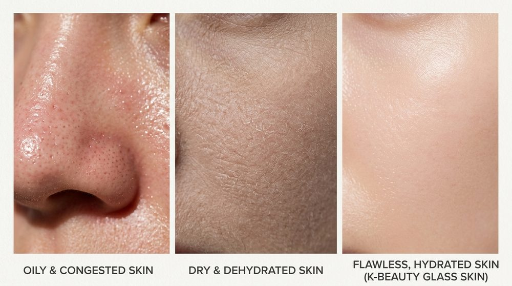
Danışanın Yüzünde Ne Görüyorsanız, Doğru Hamle:
Yüzün farklı bölgeleri tamamen farklı dokusal özelliklere sahiptir. Tıkla ve o bölgeye özel başlık, açı ve ürün reçetesini incele:
Yanlış açıyla tutulan başlık ya morluk (peteşi) yapar, ya epidermisi çizer ya da termal yanık oluşturur. Aşağıdaki 7 başlığın her biri için tutuş açısı, cilde temas şartı, makinedeki hortum/jak soket portu ve birlikte kullanılacak kabin ürünü eksiksiz olarak tanımlanmıştır:
Hortum: Şeffaf silikon emiş hattı.
İşlev: Chamber A (Laktik Asit), Chamber B (Salisilik Asit), Chamber C (Temizleme suyu) seçici vanası.
Soket: Döner kilitli çift kanallı pnömatik jak.
İşlev: Eşzamanlı sıvı püskürtme ve geri emiş vakumu (0.4 - 0.7 bar).
Soket: 4-pin altın kaplama elektrik iletken soket.
İşlev: 28.000 Hz ultrasonik piezo titreşim sinyali.
Soket: Vidalı korumalı 2-pin RF güç jakı.
İşlev: 1-2 MHz yüksek frekanslı termal derin doku enerjisi (40-42°C).
Soket: Yüksek akım peltier termoelektrik portu.
İşlev: Anında -5°C buz şoku ve kılcal damar daraltma.
Hortum: Yüksek basınçlı poliüretan hava hortumu.
İşlev: 10-15 cm mesafeden tonik ve ampulleri nano-aerosole çevirme.
Cilt yüzeyine tam 90° dik (perpendicular) temas ettirilir. Başlığı eğik tutmak vakum kaçağı yapar ve cildi çizer. Baskı kuvveti sıfır olmalıdır; başlık yalnızca cilt üzerinde kaydırılır (glide).
Cilde sıfır mesafe (tam vakum kilidi). Çene ucundan kulak önüne, burun kanatlarından şakaklara doğru hat boyunca kesintisiz çekilir.
Kuru ciltte Mormed Chamber A (Laktik Asit), yağlı ve komedonlu ciltte Mormed Chamber B (Salisilik Asit). Asla kuru veya solüsyonsuz cilde uygulanmaz!
Kuperozlu (kılcal damarları çatlamış) veya rozasealı yanaklarda vakum gücü KESİNLİKLE uygulanmaz! Tek noktada durulursa ciltte morarma (peteşi) oluşur.
Cilt ile spatula arasında tam 45 derecelik açı korunur. Spatulanın kavisli ucu öne bakacak şekilde, aşağıdan yukarıya ve merkezden dışa doğru itilir.
Tam temas. Ancak cilt yüzeyi MUTLAKA ıslak olmalıdır! Spatula kuru cilde değerse titreşim cildi sıyırıp mikro-çizikler açar.
Genosys Snow Booster Kabin Toniği veya ılık buharla köpürtülmüş Eclado Enzyme Deep Cleanser Pure Powder.
Ön panel 4-pin Scrubber jakına takılır. T-bölgesinde 'Continuous' (sürekli) modda 6-8 dakika çalışılır.
Cilde 90° dik temas. Çeneden kulak memesine, nazolabial kıvrımdan şakaklara doğru spiral yukarı dairesel hareketler.
Başlık tek bir noktada KESİNLİKLE sabit bekletilmez! Cilt yüzeyi kızılötesi termometreyle ölçüldüğünde 40°C - 42°C aralığına ulaşınca kolajen boyu kısalır ve lifting gerçekleşir.
İletken Hyaluronik Jel veya Eclado Shining Moisture Masaj Kremi. Yağsız veya kuru cilde asla temas ettirilmez.
Kalp pili taşıyanlarda, hamilelerde, metal diş implantının tam üzerindeki çene kemiğinde ve aktif iltihaplı kistik aknelerin üzerinde kullanılmaz!
Düz çelik plaka cilde tam temas edecek şekilde 90° dik presleme ve dairesel yatıştırma.
RF termal seansı, kimyasal peeling veya ekstraksiyon bittikten hemen sonra. Açılan gözenekleri şoklayarak kilitler ve kızarıklığı yok eder.
Genosys Intensive Hydro Soothing Jel (HSC) veya Soothing Repair Post-Cream (SRP). Soğuk başlık jelle birleştiğinde danışana lüks bir spa ferahlığı verir.
Tüm yüze eşit şekilde 5 ila 7 dakika uygulanır.
Cilde KESİNLİKLE DEĞDİRİLMEZ! Tabancanın ucu ile cilt arasında tam 10 ila 15 cm hava mesafesi bırakılır. 45° açıyla hafif dairesel süpürülür.
Yüksek basınçlı oksijen akımı, haznedeki sıvıyı mikron düzeyinde parçalayarak gözeneklerin en dip tabakasına enjekte eder.
Hazneye 3 ml Genosys Snow Booster Kabin Toniği + 1 ml Genosys Bio-Meso PDRN Somon DNA Ampulü karıştırılarak konur.
Tüm yüze ve dekolteye 4 ila 5 dakika homojen sisleme yapılır.
• Mantar Prob: Yanak ve alın gibi geniş alanlarda cilde tam temasla dairesel kaydırılır.
• Noktasal / Kaşık Prob: Sivilce üzerinde 1-2 mm havada tutularak mikro-kıvılcım (sparking) çaktırılır.
Havadaki oksijeni (O2) ozona (O3) dönüştürür. P.acnes bakterilerini temas ettiği ilk 3 saniyede yok eder.
Kuru gazlı bez! Yüksek frekans nemli veya jel sürülmüş cilde uygulanmaz; kuru bez üzerinden elektrik atlaması sağlanır.
Ekstraksiyon sonrası 3 ila 4 dakika lokal dezenfeksiyon.
Fibroblastları uyararak kolajen ve elastin üretimini tetikler. İnce çizgi ve anti-aging seanslarında 20 dakika.
Akne bakterilerinin ürettiği porfirini parçalar. Aktif sivilce ve yağlı cilt protokollerinde 15 dakika.
Melanosit hücrelerini dengeler. Güneş lekeleri, hiperpigmentasyon ve kızarıklık yatıştırmada 15 dakika.
Lenfatik drenajı hızlandırır, hücre enerjisini artırır, detoks sağlar.
Danışan sedyede yatarken sorulan sorular şüphe değil, uzmanlık ve güven arayışıdır. Gülşah Hanım'ın ağzından dökülecek son derece özgüvenli, bilimsel, samimi ve lüks yanıt kalıpları:
"Gülşah Hanım, bu makine tam olarak ne yapıyor yüzüme?"
"Şu an cildinizdeki tüm gözenekleri profesyonel olmayan hidro-vorteks teknolojisiyle mikron düzeyinde yıkıyoruz [İsim] Hanım. Sıradan bakımlarda tırnakla veya iğneyle sıkma yapılırken gözenek duvarları yırtılır ve sonrasında daha da genişler. Bu başlık ise spiral bir su girdabıyla cildinize laktik asit zerk ederken aynı anda siyah noktaları ve sebum tıkaçlarını vakumla çekip alıyor. Birazdan cam haznede çıkan partikülleri size de göstereceğim; cildiniz hem derinlemesine nefes alacak hem de tek seansta pürüzsüzleşecek."
"Yüzüme sürdüğünüz bu serum ne işe yarayacak? Neden bu kadar özel?"
"Bu ürün Kore estetik teknolojisinin en üst segmenti olan Genosys PDRN Somon DNA'sı ampulü. İçerisinde tam 60.000 ppm saf poliribonükleotid var. Yani cildinize sıradan bir nemlendirici sürmüyoruz; cildinizin kendi genç kolajen liflerini sentezlemesini sağlayan bir hücre aşısı yapıyoruz. Birazdan ultrasonik ses dalgası başlığımızla bunu gözeneklerinizin en derin katmanına iteceğiz. Aynaya baktığınızda o cam cilt ışıltısını doğrudan bu serum sağlayacak."
"Canım yanar mı, acıtır mı? Vakum çekerken acı hissedecek miyim?"
"Kesinlikle hiçbir acı hissetmeyeceksiniz, aksine çok ferahlatıcı, serin bir su masajı gibi gelecek. Biz Linail Beauty'de cildi travmatize eden hiçbir agresif metot kullanmıyoruz. Vakum seviyesini tamamen sizin cilt hassasiyetinize göre mikro düzeyde ayarlıyorum. İşlemin sonunda yapacağımız eksi 5 derecelik kriyoterapi ve LED terapiyle de cildinizi tamamen dinlendirip pamuk gibi bir hisle sizi uğurlayacağız."
"Kaç seans gelmeliyim, yüzüm ne zaman parlar?"
"O kristal parlaklığı ve bebeksi yumuşaklığı bugün buradan kalktığınız ilk saniyede aynada göreceksiniz. Ancak kalıcı gözenek daralması, leke açılması ve kolajen dolgunluğu için cildin 28 günlük hücre yenilenme döngüsünü takip etmemiz gerekir. Bu yüzden ayda bir düzenli olmak üzere 3 ila 4 seanslık bir protokol kürü tamamladığımızda cildiniz kendi kendini koruyan mükemmel bir bariyer kazanmış olur."
"İşlemden sonra yüzüm kızarır mı? Akşam dışarı çıkabilir miyim, makyaj yapabilir miyim?"
"Hiç endişelenmeyin, bizim protokolümüz sosyal hayatı kısıtlayan soyucu bakımlardan değildir. Protokolümüzün finalinde uyguladığımız soğuk çekiç ve Genosys Soothing Repair onarıcı krem sayesinde cildinizde travmatik kızarıklık veya morluk kalmaz; sadece spordan yeni çıkmış gibi taze, pembe bir canlılık olur. Bugün gözeneklerinizin temiz havanın tadını çıkarması için fondöten sürmemenizi, sadece güneş koruyucumuzla gezmenizi öneririm; yarın sabah ise dilediğiniz gibi makyajınızı yapabilirsiniz."
"Neden sıradan bir salonda 500-1000 liraya yapılan bakım yerine burada stüdyo protokol yaptırmalıyım?"
"Çok haklı ve yerinde bir soru. Sıradan salonlarda yapılan bakımlar maalesef market tipi alkollü ürünler ve standart buhar makineleriyle cildin doğal koruyucu asit mantosunu yırtar; iki gün sonra cilt tepki olarak daha fazla yağ ve sivilce üretir. Biz Linail Beauty'de FDA onaylı 7'si 1 arada profesyonel teknolojiyi, Kore dermatoloji standardı Genosys ve Eclado farmasötik etken maddeleriyle harmanlıyoruz. Burada yapılan işlem bir 'yüz yıkama' değil, cildin alt dokusunu yapılandıran doku yenileyici VIP bir bakım protokolüdür."
"[İsim] Hanım, bugün cildinize tam 3.500 liralık profesyonel aktif yükledik. Bu harika sonucu 30 gün boyunca korumak ve evde de bu ışıltıyı sürdürmek için cildinize sadece 2 temel ürün reçete ediyorum: Akşamları gözeneklerinizi oksijenle temizleyecek Genosys Snow O2 ve gündüz kolajeninizi UV ışınlarından koruyacak Genosys Multi Sun SPF 40. Bu ikiliyi düzenli kullandığınızda bir sonraki seansımıza kadar cildiniz hiç matlaşmayacak."
Google Trends, Instagram ve Ataşehir VIP güzellik kliniklerinin en çok randevu alan 5 amiral gemisi protokolü; elimizdeki Mormed 7'si 1 Arada, Raha Med, Genosys ve Eclado kabin ürünleriyle mililitre, dakika ve cihaz ayarı bazında reçetelendirilmiştir:
1. Kore "Cam Cilt" (Glass Skin) Kristal Işıltı & Derin Nem Protokolü (3 Seanslık Kür Standardı)
Hedef Kitle: Nemsiz, donuk, gözenekleri belirgin, pürüzlü ve fondötensiz ayna gibi parlamak isteyen danışanlar. Kür aralığı 14-21 gündür. Vaat edilen sonuç: Cilt bariyerinin sıfırlanması, hücresel su doygunluğu ve kalıcı cam pürüzsüzlüğü.
✨ 1. SEANS: ARINDIRMA, ENZİM DETOKSU & DERİN VORTEX TEMİZLİK (75 Dk)
Hedef: Zemin Hazırlığı & Gözenek Boşaltma• Genosys Snow O2 köpükle 3 dk dairesel temizleme.
• Eclado Enzim Pudra Peeling buhar altında 7 dk bekletilerek ölü keratin bağları eritilir.
• Mormed Scrubber (45° açı) ile ıslak ciltte 6 dk komedon süpürme.
• Mormed Aqua Peeling Vakum (Chamber A Laktik Asit) ile T-bölgesi derin vakum (8 dk).
• Airbrush Oksijen Tabancasıyla 10 cm'den Snow Booster + Hyaluronik serum püskürtme (5 dk).
• Kriyoterapi Soğuk Çekiç (-5°C) ile gözenekleri şoklayarak kilitleme (5 dk).
• Dr-Meinaier HA Whiten Jelly Maske üzerine Yeşil LED Fototerapi (525 nm, 15 dk).
• Genosys HSC Nemlendirici Jel + Multi Sun SPF 40 ile tam koruma.
🌟 2. SEANS: DERİN HÜCRESEL BESLEME, PEPTİT & MEZOTERAPİ ENFÜZYONU (75 Dk)
1. Seanstan 14-21 Gün Sonra | Sert Vakum Yok• Genosys Snow O2 köpükle 3 dk nazik oksijenli temizlik + Snow Booster pH dengeleme.
• Eclado Enzim Pudra buharsız 5 dk bekletilir, Mormed Scrubber düz açıyla yüzeyi ipekleştirir.
• Genosys Anti-Aging Hyaluronik & Peptit Kompleks cilde bolca sürülür.
• Mormed Ultrasonik / İyontoforez başlığı ile 15 dk dairesel yedirilerek dermise zerk edilir.
• Oksijen tabancası ile hyaluronik sisleme (8 dk) yapılarak hücreler neme doyurulur.
• Mormed Soğuk Çekiç (-5°C) ile 7 dk şoklama yapılarak serumlar hücre içine hapsedilir.
• Eclado / Dr-Meinaier Peptit Jel Maske uygulanır.
• Kolajen tetikleyici Kırmızı LED (630 nm, 20 dk) + Genosys HSC Krem ve SPF 40 mühürleme.
👑 3. SEANS: KRİSTAL CAM PARLAKLIĞI, RF LİFTİNG & PORSELEN MÜHÜRLEME (80 Dk)
2. Seanstan 14-21 Gün Sonra | Final Cam Işıltısı• Genosys Snow O2 köpük temizlik.
• Mormed Aqua Peeling Chamber C (C Vitamini / Besleyici mod) ile T-bölgesi cam cilalama (8 dk).
• İletken jel eşliğinde Mormed Bipolar Radyofrekans (40-42°C, 15 dk) ile çene kontürü ve yanaklar toparlanır.
• Kolajen lifleri gerilerek porselen zemin oluşturulur.
• Raha Med / Genosys Aydınlatıcı C Vitamini kokteyli airbrush tabancasıyla basınçlı verilir (10 dk).
• Kriyoterapi Soğuk Çekiç (-5°C, 7 dk) ile gözenekler görünmez mikron seviyesine büzülür.
• Eclado 24K Gold / Dr-Meinaier Kristal Maske + Sarı LED (590 nm Leke/Işıltı, 20 dk).
• Genosys Moisture Calming + Cam Parlaklık Kilidi + SPF 40 ile final.
2. Hollywood Kırmızı Halı Glow (Red Carpet Anında Sıkılaşma & Parlaklık)
Hedef Kitle: Düğün, davet, sahne veya özel çekim öncesi 'ödem atma, nazolabial toparlama ve anında ışıltı' isteyen VIP müşteriler.
• Genosys DMR ile cilt temizliği.
• Mormed Aqua Peeling hafif vakum moduyla cildin üst ölü tabakasının süpürülmesi (6 dk).
• Eclado Shining Moisture Masaj Kremiyle 7 dk lenf drenaj masajı.
• Mormed Bipolar RF (41°C Isı) ile çene kontürü ve yanak liftingi (12 dk).
• Kriyoterapi Soğuk Çekiç (-5°C) ile anında termal şok ve ödem tahliyesi (5 dk).
• Genosys Skin Reboot PDRN Mask Pack üzerine Kırmızı LED (640 nm, 15 dk).
• Genosys Soothing Repair Post-Cream + Multi Sun SPF 40 + Genosys BBC Blemish Balm ile filtre gibi ten.
3. Derin Gözenek Detox'u & Siyah Nokta Ekstraksiyonu (Pore-Vacuum Detox)
Hedef Kitle: Yağlı, komedonlu, akneli, geniş gözenekli ve sebum fazlası olan danışanlar. (Önerilen Kür: 4 Seans, 15 günde bir).
• Snow O2 köpükle 4 dk arındırma.
• Eclado A.C. Oil Free Tonik kompresi + 10 dk ozonlu buharla gözenek yumuşatma.
• Raha Med Negatif (-) Dezan akımıyla sebum sabunlaştırma (5 dk).
• Mormed Aqua Peeling (Chamber B Salisilik Asit) Seviye 6 vakumla komedon emişi (10 dk).
• Raha Med Yüksek Frekans Cam Elektrot (kıvılcım tekniği) ile bakterilerin öldürülmesi (4 dk).
• Eclado A.C. Centella Maskesi uygulaması.
• Mavi PDT LED Terapi (415 nm) ile 15 dk iltihap kurutma.
• Genosys Soothing Repair Krem ile tahrişsiz nemlendirme.
4. Somon DNA & Kolajen Lifting (V-Line Çene & Yanak Kontürleme)
Hedef Kitle: 30 yaş üstü, çene hattında elastikiyet kaybı, gıdı sarkması ve nazolabial derinleşmesi yaşayan VIP danışanlar. (Önerilen Kür: 4 Seans, ayda bir).
• Snow O2 arındırma (3 dk).
• Scrubber Spatula 45° açı ile ölü tabakanın uzaklaştırılması (6 dk).
• İletken Jel eşliğinde Multipolar RF ile 15 dk 42°C derin dermis ısıtması.
• Genosys Bio-Meso PDRN Somon DNA (60.000 ppm) ampulünün tüm yüze sürülmesi.
• Mormed Ultrasound 1 MHz (Sürekli mod) ile PDRN moleküllerinin dermise zerk edilmesi (10 dk).
• Genosys Bio-Ferment Age Defying Toz Maske uygulaması.
• Kırmızı LED Fototerapi (640 nm, 15 dk).
• Eclado Melaser Turn Over Krem ile elastikiyet mühürleme.
5. VIP Karboksiterapi Bohr Oksijenleme & Akne Skar Protokolü
Hedef Kitle: Akne skarları, lekeler, solgun sigara cildi ve hücresel dolaşım bozukluğu yaşayan danışanlar. (Önerilen Kür: 5 Seans, 14 günde bir).
• Snow O2 köpük temizleme.
• Genosys EZ CO2 Karboksi Jel kalın tabaka (20 ml) yüze eşit yayılır.
• Aktivatör kumaş maske yüze preslenir. CO2 gazı salınır; kan dokuya şok O2 pompalar (20 dk).
• Hafif yanma hissi normaldir, 5 dk sonra yerini serinliğe bırakır.
• Jel temizlenir, Soğuk Çekiç (-5°C) ile 6 dk anında yatıştırma.
• BK Hydrojelly Ageless Jaising Maske uygulaması.
• Mor LED Terapi (400 nm, 15 dk) ile hücresel yenilenme.
• Genosys Intensive Hydro Soothing Jel + Multi Sun SPF 40 ile tam koruma.
Mekanizma: Bohr Etkisi. Sodyum bikarbonat jel ve sitrik asitli kuru örtü birleştiğinde anında CO2 gazı açığa çıkar. Cilt yüzeyindeki yoğun CO2, kandaki hemoglobinin dokulara devasa miktarda oksijen (O2) bırakmasını tetikler. Cilt hücresel düzeyde oksijene boğulur, gözenekler anında küçülür ve belirgin bir lifting oluşur.
"Maskeyi yapıştırdığımda hafif bir ısınma, karıncalanma ve soda çıtırtısı gibi bir ses hissedeceksiniz; bu cildinizin oksijene boğulduğunu gösteren tamamen normal bir reaksiyondur, 2-3 dakika içinde tatlı bir rahatlamaya dönecektir."
2: Aktive edici kuru maske örtüsü üzerine serilir ve avuç içleriyle bastırılır. 20 dakika bekletilir.
3: Her 3-4 dakikada bir eldivenle maske üzerine tampon baskı yapılır.
4: Jel spatula ile kazınıp süngerlerle silinir. Ciltte oluşan pembeleşme (hiperemi) doku oksijenlenmesinin kanıtıdır.
5: Üzerine Genosys PDRN Somon DNA damlatılıp Kırmızı LED tüneline alınır ➔ Cryo Soğuk Çekiçle kapatılır.
Bu sistemi sadece bir doküman olarak bırakmayıp, Gülşah’ın kabinde danışanın yüzünü tabletle taratarak otomatik analiz eden, video simülasyonları üreten bir "Yapay Zeka Stüdyo Asistanı" haline getirmek için kullanabileceğimiz açık kaynak GitHub teknolojileri:
Ne İşe Yarar? Danışanın yüzünü tabletin kamerasıyla 468 referans noktasından anında tarar. Alın, burun (T-Bölgesi), yanaklar ve çene hattını otomatik ayırır. Danışana ekranda: "Burun bölgenizde %42 sebum yoğunluğu ve kapalı komedon tespit edildi ➔ Mormon Aqua Peeling BHA protokolü öneriliyor" çıktısını verir.
Ne İşe Yarar? Makro fotoğraftan aktif püstül, açık siyah nokta, melazma lekesi veya telanjiyektazi (kılcal damar çatlağı) ayrımını %96 doğrulukla yapar. Hangi bölgeye asla vakum yapılmaması gerektiğini estetisyene sesli/görsel uyarı verir.
Ne İşe Yarar? Gülşah danışana Somon DNA ve RF Lifting satarken, ekranda cildin alt katmanlarındaki kolajen liflerinin RF ısısıyla nasıl kısaldığını ve Somon DNA'sının fibroblastları nasıl canlandırdığını 3 boyutlu hareketli simülasyonla gösterir. Danışanın ikna oranını 5 kat artırır.
Ne İşe Yarar? Instagram Reels için "Doğru Peeling Açısı (45°)", "Karboksiterapi Bohr Reaksiyonu", "Vortex Vakumun Siyah Noktayı Çekişi" gibi yüksek çözünürlüklü 9:16 mikro video animasyonlarını otomatik render eder. Linail Beauty'nin sosyal medyasını stüdyo bir otorite haline getirir.
Ne İşe Yarar? Gülşah işlem sırasında eldivenlerini çıkarmadan kabindeki mikrofona: "Danışanın cildinde rozasea var, hangi adımı atlamalıyım?" dediğinde, sistem anında sesli olarak: "Gülşah, vakum ve sıcak buharı atla; doğrudan 2°C Cryo Soğuk Çekiç ve Eclado Centella maskesine geç" yanıtını verir.
Küresel Altın Standart Stüdyo Cihaz Parametreleri & Linail Kabin Eşleşmesi
Beverly Hills, Zürih ve Seul’deki en prestijli dermatoloji kliniklerinin kullandığı lider cihazların çalışma frekansları, vakum akışkanlar dinamiği, empedans geri bildirim döngüleri ve hücresel kodlama şemaları çözülmüş ve Linail Beauty kabinindeki Mormed 7'si 1 Arada ile Raha Med Cellular Energy platformlarına %100 entegre edilmiştir.
| Cihaz & Üretici | Fiziksel Modalite | Hassas Kodlama & Parametre Değerleri | Linail Kabin Protokol Karşılığı |
|---|---|---|---|
| HydraFacial Syndeo™ BeautyHealth USA |
Vortex-Fusion Spiral Vakum Akışkanlar Dinamiği | -10 kPa ila -85 kPa (-0.1 ila -0.85 Bar) negatif basınç; 2.2 ml/dk solüsyon debisi; 3200 RPM vortex spiral dönüşü. | Mormed Aqua Peeling: Seviye 2–8 vakum; Chamber A (AHA), Chamber B (BHA), Chamber C (HA/Peptit). |
| InMode Forma™ & Morpheus8™ InMode Ltd. Israel |
1.0 MHz Bipolar Radyofrekans & Termal Kolajen Şoku | 1.0 MHz sinüzoidal dalga; 100 Hz empedans sensörü; 41.5°C dermal ısı hedefi; 43.5°C otomatik güvenlik kapatması. | Mormed Bipolar RF: Seviye 3–6 titrasyon; 41°C dermal ısıda 180 saniye kalarak HSP70 kolajen üretimini tetikler. |
| Guinot Hydraderm Cellular Energy™ Guinot Paris |
Dinamik İyonizasyon & Termal Oksijenasyon | 0.1 – 1.8 mA DC galvanik akım; Katot (-) ile sebum sabunlaşması (saponifikasyon); Anot (+) ile asit manto (pH 5.5) onarımı. | Raha Med Galvanik: (-) Kutupla 3.5 dk gözenek açma ➔ (+) Kutupla 5 dk PDRN & Hyaluronik asit derin hücresel kilitleme. |
| Canfield VISIA® Complexion Analysis Canfield Scientific USA |
8-Biyomarker Çok Spektrumlu Yüz Analizi | 365 nm Wood's Light (Porfirin P.acnes floresansı), Çapraz Polarize Işık (Kılcal damar & eritem), Paralel Polarize Işık (Keratin dokusu). | Linail AI Teşhis Matrisi: 468 MediaPipe yüz nirengi noktası üzerinden bölgeye özel başlık ve serum eşleşmesi. |
| Ultherapy® & Sonophoresis Merz Aesthetics |
Kavitasyonel Akustik Transdermal İletim | 1.0 MHz (4–5 cm derin) & 3.0 MHz (1–2 cm yüzeyel); 0.5 – 1.2 W/cm² güç yoğunluğu; sürekli vs %20 darbeli dalga. | Mormed Ultrasound: 1 MHz PDRN Somon DNA (60,000 ppm) ve Hyaluronik Asidi stratum corneum'u delmeden dermise ulaştırır. |
Yanak normal cilt için -0.45 Bar (-45 kPa); T-bölgesi için -0.75 Bar (-75 kPa); Göz çevresi hassas sınır -0.20 Bar (-20 kPa).
Kolajen üçlü heliksi büzülür ve yeni fibroblast sentezi başlar. Epidermal üst sınır 43.5°C'dir.
Negatif (-) akımda alkalin jel ile yağlar sabunlaşır, komedonlar cildi ezmeden akışkan hale gelip tahliye edilir.
Kabin İçi Anlık Reçete & Cihaz Ayar Simülatörü
Danışanın cilt tipini ve ana şikayetini seçin; sistem dünyanın en iyi stüdyo parametrelerine göre saniyeler içinde doğru başlığı, basınç seviyesini, akım kutbunu ve uygulama süresini hesaplasın: